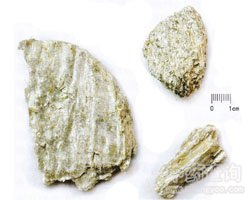

滑石

拼音
Huá Shí
别名
画石
来源
本品为硅酸盐类矿物滑石族滑石，主含含水硅酸镁［Mg3（Si4O10）（OH）2］。采挖后，除去泥沙及杂石。
生境分布
产江西、山东、江苏、陕西、山西、河北、福建、浙江、广东、广西、辽宁等地。
药材特点
单斜晶系。晶体呈六方形或菱形板状，但完好的晶体极少见，通常为粒状和鳞片状的致密块体。淡绿色、白色或灰色。条痕白色或淡绿色。光泽脂肪状。解理面显珍珠状。半透明至不透明。解理沿底面极完全。硬度1，比重2.7～2.8。性柔。有滑腻感。块滑石能被锯成任何形状，薄片能弯曲，但无弹性。多产于变质岩、石灰岩、白云岩、菱镁矿及页岩中。
性状
本品多为块状集合体。呈不规则的块状。白色、黄白色或淡蓝灰色，有蜡样光泽。质软，细腻，手摸有滑润感，无吸湿性，置水中不崩散。无臭，无味。
性味
甘、淡，寒。
功能主治
利尿通淋，清热解暑，祛湿敛疮。用于热淋，石淋，尿热涩痛，暑湿烦渴，湿热水泻；外治湿疹，湿疮，痱子。
用法用量
10～20g。外用适量。
化学成分
主含硅酸镁，其中MgO31.7％，氧化硅63.5％，水4.8％。通常一部分MgO为FeO所替换。此外还含氧化铝等杂质。
药理作用
1：①保护皮肤和粘膜的作用 滑石粉由于颗粒小：总面积大，能吸着大量化学刺激物或毒物，因此当撒布于发炎或破损组织的表面时，可有保护的作用；内服时除保护发炎的胃肠粘膜而发挥镇吐、止泻作用外，还能阻止毒物在胃肠道中的吸收
2：滑石也不是完全无害的：在腹部、直肠、阴道等可引起肉芽肿
3：②抗菌作用 用平板法使培养基含10％的滑石粉：对伤寒杆菌与副伤寒甲杆菌有抑制作用；用纸片法则仅对脑膜炎球菌有轻度抑菌作用
摘录
《中国药典》